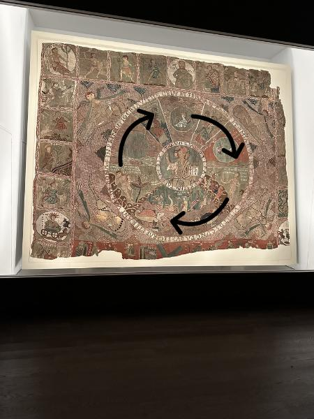
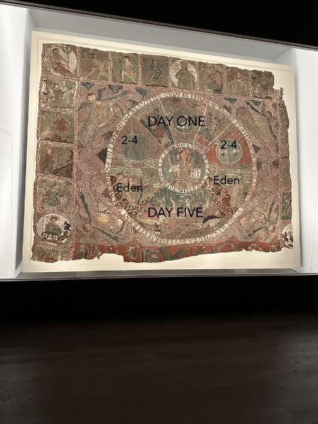
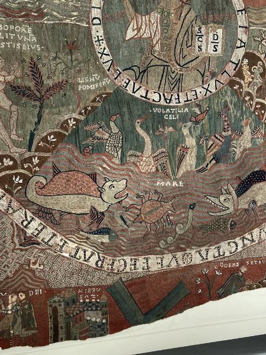

A Reading Guide to the Creation Story
The Written Text
In terms of written text, the Creation story narrated in the center circles of the tapestry starts at the nine o’clock position. The text on the outside circle summarizes the Creation story of Genesis 1: God created the earth (Gen. 1:1)…and at the end of the process, God thought it was good (Gen. 1:30).
It reads: In principio creavit D(eu)s celu(m) et terram mare et om(n)ia que in eis sunt. Et vidit D(eu)s cuncta ove fecerat erant valde bona (“In the beginning God created the sky and earth and sea and all things in them. And God saw all the things God had made and they were truly good.”).

The text surrounding the inside circle is the moment in Genesis 1:3 where God creates light. The text reads: Dixit quoque D(eu)s fiat lux et facta e(st) lux (And God said, “let there be light,” and there was light).
As discussed here, the central circle depicts "Christ in Majesty."
The Images
The visual narration in the eight panels between the two circles is a little less linear. The top half of the circle tells the story of the creation of the cosmos and heavenly bodies (days 1-4), while the bottom half tells the story of the creation of animals and humans (days 5, 6, and the Garden of Eden story from Genesis 2).
Day One
The central three panels in the top half of the circle (from about 11 o’clock to 1 o’clock) narrate the drama of Day One (Gen. 1-5). Going from left to right, they are:
- The angel of darkness dwelling on the face of the deep
- The holy spirit (in the form of a dove) moving over the waters, and
- The angel of light (Lux), which counters darkness and divides day from night.

Days 2-4
The two panels on either side of these Day One panels (in the 9-11 o’clock and 1-3 o’clock positions, respectively), narrate the division of the waters and the creation of the heavens/sky in Genesis 1:6 and the creation of the sun and moon in Gen. 1:14-18.
- The left-hand scene depicts God creating the firmament in the middle of the waters
- The right-hand scene shows the firmament dividing the waters from the waters, with personifications of the sun (Sol) and moon (Luna) appearing in the circle representing the firmament.
Day 5
The central bottom panel (about 4 o’clock to 7 o’clock) shows the creation of the creatures of the sea (mare) and the sky (volatilia celi) from Gen. 1:20-22

The Garden of Eden
The two panels on either side of the Day 5 fish and bird panel (3-5 o’clock and 7-9 o’clock, respectively) narrate two important scenes from the Garden of Eden narrative in Genesis 2. They are:
- The right-hand panel (as discussed here) narrates how God lets Adam name the creatures of the earth and air (Gen. 2:19-20)
- The left-hand panel narrates how God puts Adam to sleep and makes a woman out of his rib (Gen. 2:20-25).